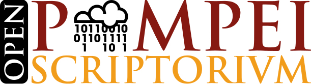

Towards SCRIPTORIVM: OpenPompei at CAA15
{kind=link}
The Computer Applications and Quantitative Methods in Archaeology (CAA) Annual Conference, as referred to in home page, is “one of the major events in the calendar for scholars, specialists and experts in the field of computing technologies applied to archaeology” and so probabily it is also the place where we’ll be able to meet many archaeologists from the international community interested in Archaological Open Data.
OpenPompei will be there too! We are trying to build relationships between citizens who care about Pompeii, helping them to make as more transparent as possible what is there (opening archaeological data) and what is done here (opening procurement data: for this reason born Transparency Portal). The right to knowledge garanted by transparency is referring both to the past and the present. The italian archaeological community should drive the progress of citizen engagment into a new management of Cultural Heritage based (also) on Open Data, the some progress we have imagined to launch in Pompeii.
Particulary in Siena will be a workshop during which we hope to meet many “open archaeologists”: Ha(r)ckeology: an hacking approach to open archaeology, promoted by the MAPPA Lab of the University of Pisa (there is the complete workshops list). As STVDIVM, it “has a talking and making approach and want to introduce in a practical manner in how to find, to download, to use, to reuse, and to publish data in open formats”. Here the Manifesto of Archaological Open Data, that OpenPompei officially joined from a few days, will be propose as European Manifesto.
In CAA Conference we’ll try to involve new archaologists in SCRIPTORIVM, an hackathon about Pompeii that will take place on 19 / 20 June.
During the Scriptorium we’ll try to create a Pompeii’s 4D map. Archaeological Data are “very big-data”, because they are referring both to the past-space and the past-time. We are thinking about the utility of an association between archaeological manufact and the connected geo-referenced and chrono-referenced information. A paper about Villa dei Misteri will be traced in Pompeii map, clicking on the Villa plane itself. By information implementating, it will be possible to create a kind of “Archaeological Google Scholar” geo-referenced and chrono-referenced, which we’ll be able to ask, for example: “Give us all papers about the wine production in Campania between III and I century B.C.!”
This is our proposal. If you have any idea about, subscribe the GitHub repository dedicated to SCRIPTORIVM!
{kind=link}
{kind=link}